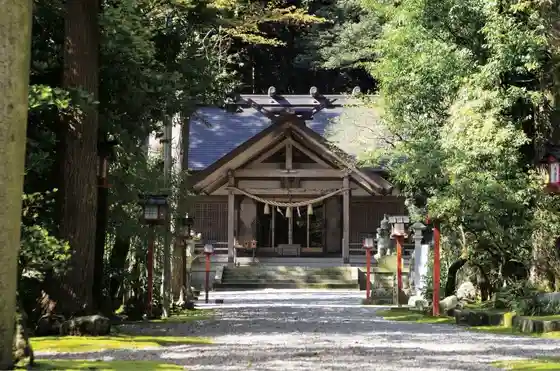
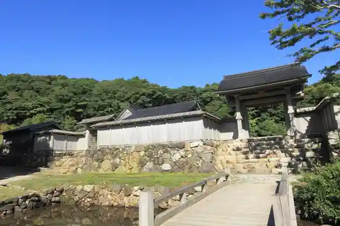
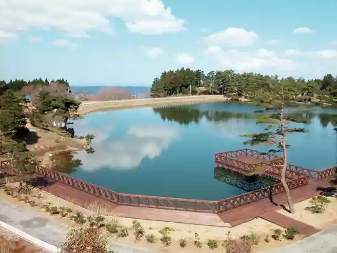
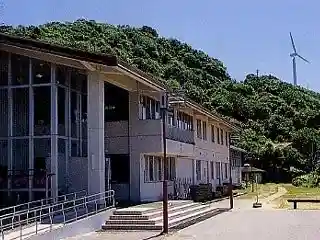

Fudo Taki
Nakanoto, Ishikawa · 0767-76-1422 · Official / source link
Noto Kuni Ni Yuki Miya Tenjitsu In Hime Shrine
Nakanoto, Ishikawa · 0767-76-0221 · Official / source link

Isurugi Yama
Nakanoto, Ishikawa · 0767-76-0408 · Official / source link

Goishigamine Prefectural Nature Park
Nakanoto, Ishikawa · Official / source link

Ishikawa Prefectural Kashima Shonen Nature no Ie
Nakanoto, Ishikawa · 0767-77-2200 · Official / source link

Noto Jofu Hall
Nakanoto, Ishikawa · 0767-72-2233 · Official / source link
Nakanoto Orimono Dezain Center
Nakanoto, Ishikawa · 0767-72-2121 · Official / source link
Ame no Miyako Fun Gun
Nakanoto, Ishikawa · 0767-72-2202 · Official / source link
Burial Mound Koen Toriya
Nakanoto, Ishikawa · 0767-76-1848 · Official / source link
Dokan Keijo Ato
Nakanoto, Ishikawa · 0767-74-2806 · Official / source link
Noto Tekisutairu Rabo
Nakanoto, Ishikawa · 0767-74-2271 · Official / source link
I Su Ryu Shi Hiko Shrine
Nakanoto, Ishikawa · 0767-76-0408 · Official / source link
Appii Rokusei
Nakanoto, Ishikawa · 0767-72-4555 · Official / source link
Noto Bu Shrine
Nakanoto, Ishikawa · 0767-72-2176 · Official / source link
Shinnozuka Burial Mound
Nakanoto, Ishikawa · 0767-76-2808 · Official / source link
Kuni Toroku Yukei Bunkazai Kyu Tango Tei
Nakanoto, Ishikawa · 0767-74-2806 · Official / source link
Isurugi Yama Tento Village
Nakanoto, Ishikawa · 080-6351-1762 · Official / source link
Mayu Takegaoka Kyukeijo
Nakanoto, Ishikawa · 0767-74-2806 · Official / source link
Dokan Park
Nakanoto, Ishikawa · 0767-74-1234 · Official / source link
Kunishige Yo Mukei Minzoku Bunkazai (U Sama Dochu) no Yado
Nakanoto, Ishikawa · 0767-74-2806 · Official / source link
Mayu Jozan Kaminarigamine
Nakanoto, Ishikawa · 0767-76-2808 · Official / source link
Isurugi Yama Museum
Nakanoto, Ishikawa · 0767-76-0408 · Official / source link
Furusato So Osamu Kan
Nakanoto, Ishikawa · 0767-74-2735 · Official / source link
Kenko Hausu Kei
Nakanoto, Ishikawa · 0767-72-3970 · Official / source link
Kuni Toroku Yukei Bunkazai Ko Minka Mioya Village
Nakanoto, Ishikawa · 0767-74-2806 · Official / source link
Ame no Miya Noto Obo no Kan
Nakanoto, Ishikawa · 0767-72-2202 · Official / source link
Noto Obo Boranteiagaido no Kai
Nakanoto, Ishikawa · 0767-76-8000 · Official / source link
Ame no Miya Guriin Plaza
Nakanoto, Ishikawa · 0767-76-2808 · Official / source link
Kyukan Bo
Nakanoto, Ishikawa · 0767-76-0654 · Official / source link
(Kabu) Chiiki Mirai
Nakanoto, Ishikawa · 0767-74-2121 · Official / source link
Nakanoto Town Hall
Nakanoto, Ishikawa · 0767-74-1234 · Official / source link